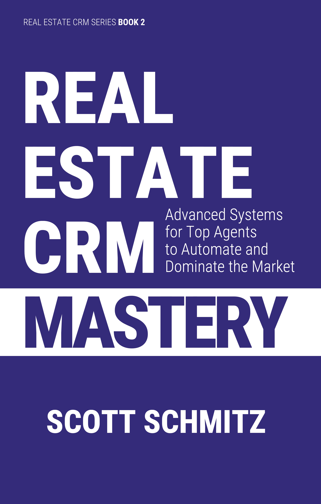

REAL ESTATE SYSTEMS FROM A 20-YEAR INDUSTRY VETERAN
Most experienced real estate agents use their Real Estate Customer Relationship Manager (CRM) as little more than a glorified address book. Calls are returned, but prospects who require time for incubation are often lost due to inconsistent follow up and inattention. Past clients are neglected, resulting in fewer referrals and repeat business. Real Estate CRM Mastery shows how to turn your CRM into a command center.
INSIDE, YOU'LL DISCOVER HOW TO:
—Jennifer Allan, Sell with Soul
Very few people buy or sell a home on a whim. Almost every real estate transaction is driven by a major life event: marriage, a new baby, a job change, divorce, or retirement. These are not just personal milestones; they are the primary reasons people buy or sell real estate. An experienced agent understands this and recognizes that their role is to support people through life’s biggest, most emotional changes.
By paying attention to these events, you shift from reactive to proactive, helping you anticipate when a friend or relative might need your help. When you recognize these signs, you might even foresee the need for your assistance before your friend is aware of it themselves. Your friends will appreciate your professional advice because they know you have their best interests at heart and that you will do everything possible to maximize their return on the sale or purchase of their home.
Baby on Board Secret: When someone shares that they are having a new baby, that’s a sign that they might need your assistance soon. One of the most common reasons why someone might want to upsize their home is that they have a growing family and need more space.
The following sections examine the most common life events that prompt a move. We discuss each situation in detail and suggest ways to connect with your clients and prospects during these critical, often emotional moments. These are just a few examples. Once you understand the main idea, you’ll develop an intuitive sense of which friends will soon need the help of a trusted real estate agent. This enables you to spend more time and focus intentionally on those friends during these key milestones in their lives.
When a couple gets married, one of their first considerations is usually where to live. Are they already living together, or will they move in together after getting married? They may be renting and are looking for a more stable option, such as buying a home. If that’s the case, you might be asked for advice on how they can become new homebuyers. There are many questions to consider, such as how much of a down payment is needed and which neighborhoods are good for raising a family.
According to a study by Coldwell Banker, approximately 35% of all married couples buy their first home together by their second wedding anniversary1. With that in mind, a newly married couple has a one-in-three chance of needing your services within the next two years. You should maintain regular contact with anyone you know who is engaged or recently married. The best way to do that is to add them to a touch cycle in your CRM so you can follow up with them every 90 days. Strengthen your friendship so you can be the agent they turn to when they need a real estate professional.
Typically, the bride will be more aware of the benefits of buying a home than the husband-to-be. Because of this, you might consider visiting bridal shows. You can meet with brides and hold seminars on the home-buying process. You can explain the importance of a good credit score, the down payment that might be needed, and run maximum loan calculations for brides to see what types of homes they can afford.
You could partner with bridal show vendors and exchange mailing lists. You might host a raffle where participants enter by sharing their contact information. One easy way to gather this info at a bridal show is to use your real estate CRM’s call capture feature. Brides can text a 3-digit code to your call-capture phone number, which records their phone number and caller ID name. You can ask them to text a specific detail related to the raffle, such as how many jellybeans are in the jar. The winner receives a $100 gift card or free tickets to a local “Street of Dreams” event. Call capture creates prospect records in your CRM, so you can follow up with calls and texts to help the newlywed couple on their journey toward homeownership.
Newly engaged couples likely have not yet purchased a home, so they may benefit from information on the home-buying process, how to get pre-qualified for a home loan, and how to check their credit scores and address any blemishes on their credit record. You can provide general advice, but it is beneficial to partner with a loan officer when you go to bridal shows. The benefits of having a team comprised of a real estate agent and a mortgage broker become especially clear when working with new homebuyers who have no experience in the process and don’t even know where to start.
Bride’s Buddy Secret: Marriage often triggers a couple’s first serious consideration of homeownership. By attending bridal shows and offering educational seminars like “Home Buying for Couples”, you can connect with engaged couples early, provide practical advice, and capture their contact information for follow-up. This positions you as a knowledgeable, trustworthy resource for newlyweds and first-time homebuyers.
The period between a wedding and a couple’s second anniversary is the most critical and responsive window for turning newlyweds into active homebuyers. This is known as the “nesting phase,” a psychological and practical stage that typically occurs in the first few years of marriage, during which the couple focuses on building their shared life and home. It involves moving beyond the initial excitement of the “honeymoon phase” to establish a deeper sense of safety, comfort, and permanence in their new life together. This transition often manifests as a practical need to purchase a stable home before starting a family.
While buying a home together is an exciting milestone, newlyweds should first understand that money can be a major source of marital conflict and stress. The home-buying process requires couples to confront and align their financial goals, credit histories, and spending habits. The essential first step is for the couple to achieve financial clarity and organization. You could host a “Financial Fitness for Future Homeowners” seminar in partnership with a loan officer. This event would guide the couple toward financial alignment by discussing and agreeing on savings goals, consolidating or paying down debt, and resolving credit report issues. You can use the maximum loan calculator in your real estate CRM to demonstrate how current debt affects borrowing power, and the rent-vs-own calculator can be used to demonstrate the tax and appreciation benefits of ownership over renting.
During the nesting phase, newlyweds might engage in “window shopping” for a home without feeling pressured to commit. You can leverage this inclination by hosting a “Designing Your Dream Future Home” seminar to help the couple begin visualizing their shared future. The seminar would cover neighborhoods and schools, and discuss the pros and cons of specific home features. You can also explain how commute times might influence their decision. This low-pressure event encourages the couple to dream together, fostering an emotional connection to homeownership while positioning you as the key partner in turning that dream into reality.
Beyond the seminar, you can use your MLS listing alerts to support the couple’s “window shopping.” Set up a weekly email alert based on their ideal home criteria, such as neighborhoods, price, and features. Explain that these alerts are for informational purposes only and that the couple should not feel obligated to act on them. This helps your newlywed couple visualize homeownership and identify target neighborhoods and preferred home types.
To harness the aspirational energy of the nesting phase, encourage engaged couples to create a Dream Board—either physically or digitally—on platforms like Pinterest. This activity turns their abstract dreams into clear visuals. Suggest that the couple fill their board with magazine photos or pins of ideal home styles (such as Modern Farmhouse or Mid-Century Modern), specific design features (like kitchen layouts or backyard landscaping), and home decor ideas. This is a valuable tool for you as well. When meeting with the couple, ask them to share their Pinterest board. Analyzing their pins gives you a clear understanding of their preferences, allowing you to set up highly targeted listing alerts and guide them toward the perfect neighborhood, home style, and features when they’re ready to buy.
There are many intangible benefits of homeownership that a newly married couple might not yet appreciate. You can highlight the extra freedoms and space a home offers: the ability to adopt a pet without landlord restrictions, the peace of mind that comes from not hearing neighbors above or below, and the luxury of dedicated space for new hobbies. For instance, a home can provide a garage for a partner who wants a workshop for car maintenance or woodworking, or a fenced yard and garden beds for a couple interested in gardening or landscaping. This is just one more way you can help a newly married couple imagine themselves as homeowners.
Prospecting newly engaged couples can be very rewarding, both financially and emotionally. You’re helping a couple who have fallen in love find their forever home together. However, you need to be realistic about the multi-year commitment required to nurture these kinds of leads. You might meet someone today, but not close on their home for another 2 years.
Do you have a friend who just started a new job? A new job often brings changes in commuting distance, finances, or lifestyle. For example, your friend may have taken a night shift, and their home is too noisy during the day to get a good night’s sleep. One solution is to find a quiet neighborhood with lower daytime noise so your friend can rest properly. A new job could also mean new friends and shifts in social life. Perhaps their current living situation is no longer ideal. For example, someone who recently graduated and lives with their parents might find that their new job provides the financial means to live on their own. That new job creates an opportunity for you to help them find a new home to purchase.
One reason someone might consider buying or selling real estate is a major promotion at work that makes a larger, better home more affordable now. Therefore, it is helpful to understand the business situations of people in your circle of friends. Are their careers progressing? Did they get a promotion? If so, are they thinking about upgrading their home? Or might they be considering buying a vacation home? You will likely meet people socially, especially within your sphere of influence, who mention a promotion or a new job. If that happens, consider how that change could lead to new real estate needs.
Another reason someone might need to sell their home is that they have lost their job or need to relocate for a new one. In either case, your friend—the seller—is highly motivated, and the timeline is urgent. They will also aim to maximize their sale price. So, your sales pitch should focus on those three points. This would be a fantastic opportunity to offer them a friends-and-family discount on your commission as a goodwill gesture.
Some companies transfer employees between locations within the same organization. These job transfers might include company assistance with selling their current home and buying a new one. As a real estate professional, you could help with either of these transactions. To secure these opportunities, consider building relationships with local companies that transfer people between job sites. Reach out to their personnel departments, visit in person to meet the personnel director, and send a mail-merged printed letter describing your services.
You could offer to pick up employees at the airport and escort them and their families around their new city. You could show them suitable homes that meet their criteria and take them around town. Use the showings feature of your real estate CRM to preview the selected homes and plan a curated route so that you make the most of their time. With careful planning and use of the route planning feature in your CRM, you could pick them up from the airport, show them a few homes, take them out to dinner, and drop them back off at the airport—all in a single long day.
The Showing Scorecard Secret: After enough showings, your buyer will start to blur the houses they see together. Use your CRM’s showings feature to log their thoughts on each property they tour. If they forget which house had the nice fence or stonework, you can remind them, even if weeks have gone by.
For sellers, you can add value by offering to list their old house. You could also offer to monitor their vacant home and arrange services that a recently transferred employee might not be able to handle after moving out of town. For example, you can use the vendors’ list in your CRM’s contacts database to arrange lawn care and any necessary repairs.
For a longer-term situation, you can use the rental management features in your CRM to manage rentals if your client decides to rent their property instead of selling it.
About 64% of job transfers include some form of relocation assistance2. These benefits typically cover living expenses, home-finding trips, moving costs, and help in selling the current home. The most common methods for selling the home are a Guaranteed Buyout (GBO) or a Buyer Value Opinion (BVO), both managed by a Relocation Management Company (RMC). A GBO provides the employee with an immediate offer based on independent appraisals, allowing for a quick sale and move. A BVO is similar but lets the employee find their own buyer; if that buyer backs out, the RMC steps in to buy the home at a modified, guaranteed value. These programs are popular because they guarantee a commission and ensure a smooth, timely closing.
When working with an RMC, your commission might be reduced because a part will go to the RMC as their fee. Before engaging, make sure to follow their strict protocols; failing to do so can risk your commission. You can use your CRM to record the final commission after the referral fee. Additionally, follow the RMC’s specific documentation requirements to meet their deadlines and stay compliant. Building relationships with these RMCs can create a steady stream of repeat, high-value business. Your ability to assist the employee during the transfer process is valuable to both the employer and the employee.
While closing a single deal like this is beneficial, the true goal is to become the preferred agent for multiple transactions with that employer. Therefore, you might spend time building relationships with the HR departments of local employers in the neighborhoods you serve. Identify the largest employers in the area and add them to your CRM, including the contact details for the person responsible for relocation assistance. A mailed cover letter, along with a packet of information about your services, would be exactly what is needed.
For executive relocation assistance, a higher level of service is expected. If that is your goal, list the additional services you optionally provide, such as nanny services, driver services, and airport pickup and drop-off.
Firm Friend Secret: By building relationships with large local companies that have employee relocation programs, you can offer specialized services to help transferring employees buy or sell homes with a minimum of disruption. This is an excellent source of repeat business.
An employee taking part in a job transfer is a valued team member. The employer will appreciate how you can minimize disruption to their employee’s life. Your ability to add value sets you apart from other agents. You should consider the large employers within commuting distance of your area. These high-touch services offer an extra level of service that justifies a full commission, which is always a positive.
Divorce can be a difficult time for everyone involved, especially children. Studies indicate that 61% of divorces involve the sale of the marital home. If someone you know is going through a divorce, stay close to them because there is a good chance they will need your services soon. A good way to stay in touch is to set up a follow-up schedule in your real estate CRM. Your services may be needed not only to sell the home but also to estimate its value during asset division. So, it’s important to check in every few weeks throughout the divorce process to offer emotional support and trustworthy real estate advice.
If you want to expand beyond your current sphere of influence, consider becoming a real estate agent who specializes in divorce cases. A great way to generate divorce leads is to build relationships with family law attorneys. Sending emails to divorce attorneys seeking their support is typically ineffective. Instead, I recommend using your real estate CRM’s mail merge feature to send a printed letter. Identify attorneys who specialize in divorce law in your area. Enter their information into your real estate CRM, including their name, phone number, email address, website, and other relevant details. Initially, establish relationships with at least three attorneys who might consider recommending you.
In many cases, the divorcing couple will select their own real estate agent. However, that may be impractical due to a lack of trust between the parties; in such a case, the attorney could recommend a neutral agent, such as you. As you build a reputation within the community of lawyers, you will be able to draw upon recommendations that will significantly improve your odds of being hired. Divorce attorneys often have a heavy workload, so once you are considered a solid agent, you should expect a steady amount of work.
To elevate your status beyond that of a listing agent, consider specialized training. Certifications such as the Certified Divorce Real Estate Expert (CDRE) or similar designations signal your expertise in navigating the legal requirements and sensitive dynamics unique to these transactions. This training focuses on the specific valuation requirements in court-ordered situations and prepares you to handle cases in which the home may be sold under direct court supervision. Attorneys are highly motivated to use an agent with an official designation, as it adds a layer of professional credibility to the valuation that can be presented in settlement or in court.
You can use the education section of your real estate CRM to track your progress toward CDRE certification. In many states, this certification counts toward the continuing education requirements for license renewal.
Your first step is to prospect the attorneys you have selected. Create a complete packet of information, including details about the services you provide and the areas you serve, along with a mail-merged cover letter generated in your real estate CRM. Send the packet via postal mail.
You should call after a week to check whether the attorney has received your packet and any questions. You might also offer to drop by, as you will be in the area later in the day, and would love to discuss how you might assist with an analysis of the value of marital property and with its sale.
As with buyers and sellers, follow up with each attorney more than once, using multiple channels of communication. Use the touch cycle features in your CRM to ensure it is completed.
The legal process of a divorce can often be lengthy, with your role as a real estate expert potentially lasting a year or more. During this time, attorneys will rely on your expert opinion to determine a fair, neutral valuation of the marital home for asset division.
You will be asked to provide a Comparative Market Analysis (CMA) that evaluates recently sold, currently listed, and expired properties in a specific area to estimate a home’s likely sale price. This value will be used to determine the division of marital assets. Your ability to assess a value reasonably close to the final sale price will be an essential factor in gaining additional business, so take the time to do your due diligence.
One particularly compelling prospecting approach is to offer a CMA for three properties the divorce attorney is currently handling. The understanding would be that these CMAs could serve as a second opinion and be used alongside the current real estate professional already engaged for the CMA and sale. The advantage of this approach is that the attorney really has no reason to turn down your offer.
If the couple decides to sell the house as part of the settlement, your established relationship positions you to assist with the transaction, but that is not guaranteed. A CMA does not guarantee that you will be asked to list the property. Therefore, you should maintain regular contact with the attorney and the seller using the touch cycle features in your CRM.
The property being sold may be in poor condition due to the marital situation. There might be items in need of repair, holes in the walls, and damaged doors. Due to animosity, one of the sellers may be less inclined to make the house look its best for showings. For this reason, you might need to use your skills to bring a different kind of buyer to the table, such as an investor willing to overlook cosmetic blemishes and able to close quickly. If you keep a list of special-situation investors in your CRM contacts database, now would be the time to pull them out and let them know about a special situation coming to market
Attorney’s Ally Secret: Befriend divorce attorneys and offer neutral property valuations for their cases. By offering these services, you increase the odds of gaining an eventual listing. Divorce attorneys are an excellent source of repeat business.
Divorce sales can be emotionally charged, and your primary role is to serve as a neutral, stabilizing force. To do so, use your real estate CRM to maintain completely separate communication channels and records for each party. Ensure you keep separate contact records for the husband and wife, each with their own email address, phone number, and mailing address. It is crucial that you stay in regular contact with the attorney and both of your clients. Divorce deals like these mean you have multiple people to keep informed, so it is extra work, but the last thing you want is for anyone to feel you were not keeping them informed.
Log every phone call, email, and text message for each individual in their own contact record in your CRM. This careful record-keeping helps you deliver fair service and creates a communication log that can protect you if disputes arise between the divorcing couple. In divorce situations, avoid including both the husband and wife in the same email chain; instead, send separate emails to each party. This simple practice prevents accidental reply-all incidents and protects each party’s confidential feedback.
You can use the parties section of your transaction manager to track both sellers. That way, both sellers receive your weekly status and service reports, allowing them to see progress. Be careful with any notes you add to your CRM, as they might offend one party. There may be animosity between the parties, and the last thing you want to do is make that worse.
When a property owner passes away, the estate executor faces the challenging task of managing assets during a time of grief. As a real estate professional, your role isn’t that of a typical salesperson but that of a trusted and compassionate advisor. This calls for a patient, methodical approach that emphasizes providing value and expertise well before a listing agreement is signed.
In 1989, AARP reported that 90% of probate cases involving people age 60 and older included the disposition of real estate3. This means that if you know someone whose older family member just died, there is a good chance a real estate agent will need to be involved in handling some portion of the estate. That could involve selling the home or conducting a CMA to estimate the property’s value. If someone in your circle of influence passes away, it is a time of mourning for you and others who knew your friend. It is also understandable that, in addition to offering comfort, your services as a real estate agent might be necessary for your friend in need.
There are also methods for you to find probate listings through prospecting. One option is to subscribe to a lead-aggregation service that provides probate leads. One such service is ForeclosuresDaily, but others are available online. You would download a weekly CSV file from your probate service and import it into your real estate CRM using your CRM’s valet import feature. The advantage of this method is that all the preliminary work, including gathering information about the deceased, the property, and contact details for attorneys and executors, has already been completed.
Another method is to collect this information yourself by reviewing public death notices and researching property tax records. Although it can be tedious, once you’ve done this a few times, you can repeat it weekly and get fairly reliable results. This approach can save you money and might even provide more accurate information than subscribing to a lead service.
There is also a third approach: building a referral network by connecting with local professionals who handle wills and estates, such as lawyers, financial advisors, and accountants. These professionals often need a trusted agent who can provide impartial property valuations during estate planning and after a death. You can also contact them directly with a series of professionally formatted mail-merged letters. If you opt for this approach, it can drastically reduce the time you spend prospecting, as the attorney would provide a letter of introduction to the executor.
Regardless of how you gather the information, the main advantage of working with probate leads is the reliability of the results. Once you establish a system and see results with a few leads, you can expand your prospecting with little extra effort. The ability to grow, along with consistent results, makes this a uniquely predictable prospecting pipeline for agents willing to operate in what some might consider an emotionally charged field.
Once you have compiled your list, the next step is initial outreach, the most delicate stage. Aggressive cold calling is inappropriate and likely to backfire, making you seem like an opportunistic “ambulance chaser.” The best approach is a time-released drip campaign of printed letters. Given the sensitive nature of the topic, you should avoid email for your initial contact. An unsolicited email about a probate matter can be easily misunderstood and may provoke a negative reaction. A series of 4 printed letters, spaced over 5 weeks, is a good starting point. These letters should focus on showing empathy and offering help before requesting their business.
Probate Patience Secret: Prospect probate leads with patience and sensitivity. The agent who acts as a trusted advisor, not a pushy salesperson, ultimately wins the listing.
The legal probate process often takes six to nine months, and sometimes longer, to settle a property4. Your CRM is essential for managing this lengthy timeline. Use it to plan your letter sequence and follow-up calls, and to carefully record every interaction. The competition for probate leads is low, and the success rate is high. This increased likelihood of success justifies spending more time on each lead.
By using your CRM’s prospects database, you can track the property address as well as the executor’s address. You do not want to send correspondence to the property; instead, send it to the executor’s mailing address. You should also take advantage of the parties’ section of your prospects database to record the full contact details for the deceased, the executor, and the attorney. This information is separate, so you’ll need full contact details for all three individuals associated with that prospect record. Under some circumstances, there may not be an attorney.
Sending a series of mail-merged letters that reference the property’s address but are addressed to the executor, include the deceased’s name, and mention the attorney, is a complex process. You can automate some of these tasks using the mail merge variables in your CRM. However, given the sensitivity of the matter, I recommend that you review and personally edit the final draft of each letter. It is unlikely you can fully automate the process, and some manual entry into the mail-merged letters will always be required before printing. Just as we live our lives as individuals, death is also unique to each person.
Once you have established contact, focus on providing value. Executors and beneficiaries sometimes live in different cities or states, making it impossible for them to manage the property directly. They will appreciate your expertise in navigating the complexities of the sale from afar. Offer to prepare a formal CMA for the estate and a seller net sheet to clarify the financials.
Since many probate properties are vacant, you can add extra value by monitoring the home. This includes coordinating lawn care, suggesting repairs, and conducting security checks to prevent vandalism. You can also assist in coordinating the disposal of personal property, such as recommending a reputable estate sale company to handle the home’s contents. This service is invaluable to an overwhelmed executor.
Pen Pal Probate Secret: Prioritize probate leads where the executor lives out of town. Sellers are more likely to be motivated to move the property quickly, and less likely to pit your services against those of other listing agents.
Finally, you will handle the probate sale. These properties may have been neglected if the previous owner was elderly or ill, often requiring major maintenance or renovation. This condition makes them less attractive to traditional buyers but ideal for your investor clients, who can make quick, all-cash offers. Beneficiaries are usually eager to receive their inheritance, so a fast, reliable closing often matters more than the highest price.
Ensure the person signing the listing agreement has the legal authority to represent the estate. Usually, the seller should be the named Executor or Personal Representative and hold the Letters Testamentary or Letters of Administration issued by the probate court. Without this court document, the agreement is invalid, and the sale cannot proceed. When working with an executor, request a copy of this official document and store it in your CRM’s document management system to confirm you have the proper legal authority from the start.
State-specific laws add complexity to the sale process. For example, California includes an auction step in which the accepted offer can be outbid in court.
To stand out as a probate specialist, consider pursuing specialized training. Certifications such as the Certified Probate Real Estate Specialist (CPRES) or similar designations demonstrate your understanding of the complex legal, financial, and emotional factors involved in these transactions. This training highlights the specific valuation requirements for court-ordered cases, preparing you to handle situations where the home may be sold under court supervision. Attorneys prefer working with an agent who holds an official designation, as it adds credibility to the valuation used in settlements or court. Use the education section of your real estate CRM to track your progress toward this certification, as it may also count toward the continuing education credits needed for your license renewal.
The legal complexities and long timelines of probate sales can seem intimidating at first. However, these challenges are exactly what create a strong competitive advantage for you. While most agents compete fiercely for the same traditional listings, a probate specialist is valued for their ability to guide clients through the legal red tape and ensure their loved one’s financial affairs are settled. This focus results in a less crowded niche and often greater profitability. A careful, long-term strategy required for these deals is ideal for a detail-oriented agent who uses their CRM to nurture multiple leads simultaneously. This approach transforms a complex process into a steady, profitable workflow.
One way to break into probate real estate sales is to hire a real estate agent mentor in another city who already works with probate leads. Because you won’t be competing with them, they will be willing to share the best approaches to probate leads, sample letters, and recommended strategies. There is also an online community of other real estate professionals who share information about working with probate leads. One such community is US Probate Leads.
Maintain regular contact with each attorney who provides referrals. Add each referring attorney to your “Top100” category. Also, establish a 90-day touch cycle and include them in your “Christmas” category so they receive a holiday card. After each closing, personally thank the referring attorney and give a small token of appreciation. Use your real estate CRM to track these referrals by entering the attorney’s name in the “referred by” field. At year’s end, review all referrals from each attorney. For key referral sources, show extra appreciation—perhaps with complimentary theater tickets or another gesture of gratitude.
The primary reason for upsizing is that the family has grown larger, possibly due to the birth of a new baby or an extended family member moving in. Your friend might be selling an existing home and buying another one, perhaps nearby. As an agent specializing in these moves, you can help the homeowner with many details, such as how they will transition between homes.
Wealthy clients may choose to buy the new home first, move in, and then sell the older home once it becomes vacant. Although this method is convenient for the family, it carries risks and costs: if the old home doesn’t sell quickly, the homeowner could end up paying for two mortgages simultaneously.
A second approach would be to list the first home for sale, then scramble to find a new home in the short window between contract and closing on the existing home. This option is the most common and also the most complex to arrange. Timing must be impeccable. An agent experienced in these kinds of situations has a competitive advantage when speaking with clients. They can explain strategies to maximize the odds of success.
Of course, in the worst case, the homeowner can move into temporary housing while they find a new home, but that means packing their belongings into storage and doing a double move. No fun, especially if school-age children are involved.
The Stepping Stone Directive: Helping someone upsize or downsize can be tricky because it involves selling one home and buying another at the same time. If you manage both transactions, that’s double the commission and double the risk of something going wrong. Use your CRM to coordinate contingencies, timing, and complexity.
This type of transaction is called a concurrent closing and typically involves a contingent offer on the new home. In this case, the contingency would be the sale of the old home, which must occur before closing on the new one. A contingency is a clause in a purchase agreement that must be satisfied for the contract to become legally binding. This means the purchase of the new home depends on the sale of the old home. A concurrent closing with a contingency sale is less attractive to sellers than one without such a contingency. Your ability to clearly explain the benefits and feasibility of this offer will be key to closing the deal. You might also negotiate a rent-back agreement, allowing your client to remain in their current home for a few weeks after closing until they move into their new home. Again, your experience and persuasion skills will be crucial, as most buyers prefer to take possession immediately after closing.
Use your real estate CRM’s contingency-tracking features to monitor these contingencies. In this case, the seller must schedule the closing date for the new home immediately after the closing of their existing home, possibly even minutes later.
If you’re fortunate enough to handle both transactions for your client, you’ll have a slight advantage in coordinating the process and increasing your chances of success. This gives your client a strong incentive to select you for both deals.
The available down payment will likely depend on the sale price. Therefore, accurate net calculations for both buyer and seller are crucial to helping your client find a new home within their budget, based on the net proceeds from selling their current house. Your real estate CRM can support these calculations and track the timing of both transactions. In this case, you’ll have two linked transactions in your CRM, with the second contingent on the sale of the first.
To reduce your client’s risk, you should arrange a consultation between your client and a trusted mortgage professional experienced in this type of transaction. Your client’s down payment is likely tied up in their current home. Additionally, the loan for the new home should be applied for with the assumption that the current home will be sold. Otherwise, the loan could be denied because it assumes the homeowner would be paying two mortgages at once. This process is more complex than a standard loan application and may require applying for a different type of loan. Since these deals are more complex, approvals will take longer, and the pre-approval might be more detailed than usual.
The stress of a concurrent closing often peaks during the move. To provide exceptional service, you can offer your client a curated list of moving companies and professional packing and unpacking services. If your client plans to sell their first home in the morning and buy the new one in the afternoon, what happens to all their belongings? You can’t instantly transfer everything from one home to the next.
One way to handle this is to use temporary storage units, often called PODS. These portable storage containers are delivered to your client’s current home a few weeks before the move. Your clients can then take their time packing and storing their belongings in the PODS. At closing, the buyer will inspect an empty house with the PODS sitting on the curb. After closing, the PODS are moved to your client’s new home and unpacked.
By using these temporary storage units, your client also has some breathing room between moves. They could stay in a hotel for a few days, for example, if the second closing is delayed.
One type of home seller who might be sympathetic to a concurrent closing is a new home builder. They have flexibility on the move-in date because the home is unoccupied, and they might be able to adjust the completion date to align with the closing of the other house. By building relationships with new home builders, you could gain an advantage when working with them.
You might also target vacant homes for the step-up home, since those properties would be available for immediate occupancy and could accommodate the buyer’s short timeframe.
Another reason for selling is the need to downsize. This is another situation where you might need to manage two transactions. Retirement often involves downsizing, which may include buying a new home in a different city, such as Florida or Arizona. If you are unable to handle the transaction yourself because you don’t serve the area they are moving to, you should offer to connect your seller with a real estate agent you know in the destination city. This allows you to earn referral income by finding an agent willing to accept your referral in exchange for a portion of the commission on the new home purchase. You can use your real estate CRM to stay in regular contact with the agent in the other city and track the referral income you earn when that sale is completed.
Knowing when someone has outgrown their current home and is considering moving up or down can be straightforward if you recognize the signs. You might hear a friend say they are “busting at the seams” now that little Johnny is getting older. Or they might mention that, with the kids out of the house, the place feels empty, and they are considering relocating to a place with a smaller yard or a better climate. Pay close attention to these signs. As their friend and trusted advisor, you are well-positioned to offer helpful advice.
For some prospects, upsizing or downsizing is optional, driven by lifestyle goals rather than an immediate need to move. Your role is to sell the dream of the next phase of life by highlighting the emotional and lifestyle gains their current home cannot deliver. For upsizing, focus the conversation on future memories and family growth. You are selling a higher quality of life and the physical space to achieve their family goals.
For downsizers, the focus should be on freedom and a simpler way of living. Highlight the low-maintenance lifestyle—no more large yard work, lower utility bills, and the option of a single-story layout for easier aging. Emphasize the new home’s proximity to amenities such as restaurants, cultural centers, and healthcare, presenting the move as a way to save time and money on travel and hobbies.
By consistently reinforcing these specific emotional benefits, you position the move as a necessary step toward their ideal future lifestyle. By offering a clear plan and sharing your experiences with similar projects for other clients, you reassure them that risks can be managed and that they can succeed. You can also emphasize why you are the best and only agent to assist them with this move.
Our pets play a vital role in our daily lives. Would it surprise you to learn that over half of pet owners consider their pets as much a part of the family as any human member? 5 In the U.S. alone, there are 94 million households with pets6. That’s nearly triple the 33.5 million households with children under eighteen7. In fact, there is now roughly one pet for every two people in the United States. A SunTrust Mortgage survey found that 33% of millennial homebuyers said their decision to buy a home was mainly driven by their dog, even more than marriage and children8. When helping a buyer find their forever home, consider their pet’s needs as well. For some, it is the key factor in their decision-making! When comparing two homes—one with a fenced yard and one without—a fenced yard is preferred by 49% of pet-owning buyers9. You can track the home features each buyer is looking for in your real estate CRM to see which are most important to them.
Your ability to understand the needs of the entire family will help identify which home looks perfect from the buyer’s perspective. They might prefer a house with a yard or a nearby park for playing frisbee. These preferences can also shape which neighborhoods or home types they consider. For example, a condominium might not be suitable for Fido, or an urban setting might be ruled out. If your client has a pet that tends to howl, whine, or bark frequently, they might prefer a large yard with plenty of space between their home and the neighbors. People with small dogs might even prefer ranch-style living to better accommodate the dogs’ tiny feet.
In any case, it helps to keep track of which pets your clients and friends have. Your CRM should include a pet-tracking field; if it doesn’t, add this information to your notes. You should also find out whether your client celebrates their pet’s birthday, and if so, record that date in the annual dates field of your CRM. Most real estate-specific CRMs can store multiple annual dates, such as birthdays for the client, spouse, children, and pets, as well as the closing date of the home you sold them. Each of these dates is significant and offers an excellent opportunity to make a quick call when it arrives. “Just wanted to wish Fido a happy birthday! How’s it going?” Your CRM enables you to view all these birthdays and anniversaries in a single, date-sorted list. You can mark the task complete once you have sent your well wishes, and it will reappear next year on the same date.
The Fencing Friend Secret: Maintain a relationship with a reliable fencing contractor. Dog owners are likely to prefer a fenced yard, and might not realize how easily a house without a fence can be made perfect with the addition of a fence.
Tracking whether a loved one, even a pet, has passed away is something friends do. If you learn that a family pet has died, you might send a pet condolence eCard or a traditional physical card by mail. Your real estate CRM can help you print a mailing label for a card sent by postal mail. If you’d like, you can even use the pet condolence eCards to send your thoughts via text message.
As a real estate agent, you’ve seen many homes with pets. Have you ever wondered whether you can learn something about the homeowner from their pets? You can. Americans in rural areas are more likely to own pets than those in suburban and urban areas. 71% of adults in rural areas have a pet. Strangers shown only photographs can match purebred dogs to their owners 64% of the time—6 times better than random guessing—because the pairs genuinely resemble each other. This research goes beyond skin deep. Studies have shown that a dog’s personality often predicts its owner’s personality. 10 While you may not be able to judge a book by its cover, you might be able to judge the owner by spending a few minutes with their pet!
If you have a listing with pets, there are a few things to keep in mind. You should talk with the owner about having a professional carpet-cleaning company deodorize the house. They will deep-clean the carpets, then apply enzyme-based cleaning solutions that break down urine. Consider adding room fresheners to mask any remaining pet scents.
While many people love pets, others do not. You should also consider that approximately 10% of the population is allergic to pet dander, which consists of the shed skin cells and hair from dogs and cats. Nearly 30% of people are sensitive to pet dander. So, a clean, odor-free space is your best approach to selling a home. You never know what the new owner will prefer, and if they are allergic to pet dander, you want to allow them to consider your listing without eliminating it.
You should also include pet details in your CRM and MLS notes, along with your lockbox instructions. While many pets are friendly and showings usually go smoothly, it’s important to prevent potential buyers from being surprised by a vicious Rottweiler or pit bull. Your buyer can also use baby gates to restrict pets’ access to certain parts of the house during showings. Signs posted in areas where pets are kept, such as the garage and back yard, can serve as helpful reminders for the showing agent. Lastly, it’s a good idea to ask the showing agent to ensure that fence gates are always closed after a showing to prevent pets from escaping.
Some agents may refuse to show a home if an aggressive dog is present. In such cases, you should arrange to have the aggressive pet removed for a few hours so the house can be shown at its best. You should discuss this with your homeowner if they have an aggressive pet. Sometimes the easiest solution is to place the aggressive dog next door in the neighbor’s yard for a few hours. A frightened showing agent cannot do their best, and it’s in your best interest to be considerate of their needs. Each year, documented cases show that real estate agents have been attacked, and some have been hospitalized, due to out-of-control pets in the house during showings.
If, while showing a home, you see a pet in danger or being abused, contact the listing agent so they can handle the issue directly with the seller. As a real estate agent, you are not a mandatory reporter and are not required to alert the authorities. However, this situation must be addressed immediately for the pet’s health and the safety of anyone showing the home. In some cases, feces and excessive filth can be dangerous when inhaled or touched. These issues will affect the home’s price, and the homeowner should be made aware so they can address the issue directly, rather than at closing with a lower sales price.
Some homes may be unshowable due to pet issues. These issues may include a large number of animals, aggressive behavior, or odors and feces beyond reasonable control. In these situations, as the listing agent, you may need to market the property differently. For example, an investor might be interested in buying such a home at a lower price. This is where a good agent can demonstrate their value, as unique situations require unique marketing strategies.
When you first meet with a client, take time to get to know the entire family, including the pets. Ask about their needs. If the pets like you, you’ve passed a key test. If they don’t, you probably won’t get hired by the owners. Pets are a pretty good judge of character, after all!
← Previous Chapter: From Generalist to Specialist | Next Chapter: Fueling the Funnel →
A 2013 national survey conducted by Harris Interactive on behalf of Coldwell Banker Real Estate LLC, titled “Marriage and Homebuying Study”, revealed a significant “velocity of purchase” among newlywed couples. The research found that 35% of married couples transitioned from renting to owning their first home together by their second wedding anniversary. For real estate professionals and financial planners, this identifies a critical two-year window where couples are most likely to make their largest lifetime purchase, often prioritizing homeownership as the foundational step of their “married life” timeline.↩︎
According to the Worldwide Employee Relocation Council (ERC) in their “2024-2025 Workforce Mobility Survey”, approximately 64% of corporate job transfers include a formalized relocation assistance package. This highlights a critical opportunity for real estate professionals and service providers.↩︎
American Association of Retired Persons (AARP) Public Policy Institute published a report on the nation’s probate system in 1989, titled “A Report on the Nation’s Probate System”. This landmark study was conducted to examine the efficiency and cost of the probate process across the United States. One of its primary findings was that the vast majority of probate cases for older individuals (roughly 90%) involve the transfer of real property (real estate), which often serves as the primary driver for families entering the probate system.↩︎
The American Bar Association notes that a typical, uncontested probate process can take anywhere from six to nine months to resolve, with more complex estates taking longer.↩︎
A 2023 study by the Pew Research Center, titled “About half of U.S. pet owners say their pets are as much a part of their family as a human member”, confirms that 97% of Americans see pets as family, and 51% majority view them as equals to human family members. This emotional shift is influencing everything from medical care to estate planning.↩︎
The American Pet Products Association (APPA) reports in their “2024-2025 National Pet Owners Survey” that pet ownership has reached a new peak of 94 million households. This represents about 70% of all U.S. homes, a figure that surged following the pandemic and has stabilized at these high levels.↩︎
According to the U.S. Census Bureau’s “2025 Current Population Survey” (Families and Living Arrangements), there are approximately 33.5 million households with children under 18. Comparing this to the 94 million pet households illustrates a massive demographic shift where “pet parenting” is becoming a primary domestic structure in the U.S.↩︎
A study by SunTrust Mortgage (now Truist), titled “International Pet Day Survey: Millennials and Homeownership”, revealed that one-third of millennial homebuyers (33%) prioritized their dog’s space over traditional life milestones like marriage (15%) or the birth of a child (8%). This trend has only intensified; the National Association of Realtors (NAR) in their 2024 Profile of Home Buyers and Sellers noted that “pet-friendliness” is a priority for 43% of homebuyers under the age of 45.↩︎
According to the National Association of Realtors (NAR) “2023 Animal House: Remodeling and Real Estate” report, a fenced-in yard is the most desired home feature for pet owners, cited by 49% of respondents. The report emphasizes that for real estate professionals, a fenced yard is a priority. Furthermore, Realtor.com’s “2024 Pet-Forward Housing” analysis found that homes mentioning “fenced yard” or “dog run” in the listing description sold 12% faster than those without such keywords.↩︎
According to National Geographic, studies have shown a connection between the personality of the pet and that of its owner. And the visual appearance of the pet and the owner are also correlated.↩︎